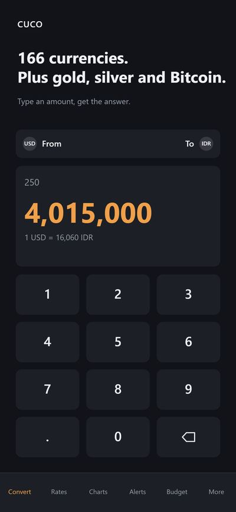
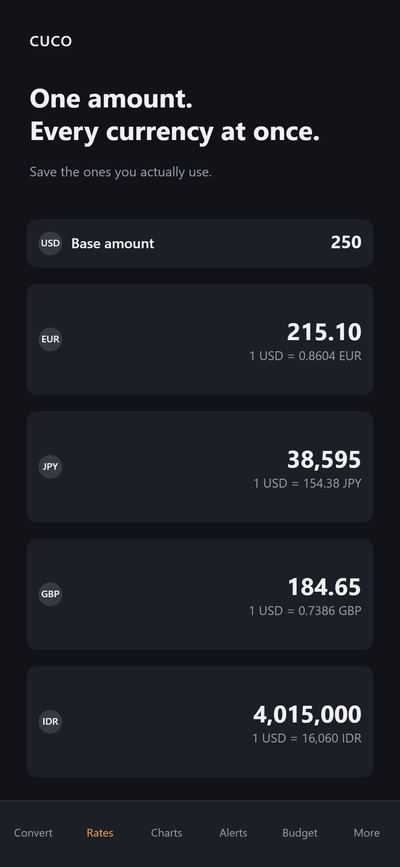
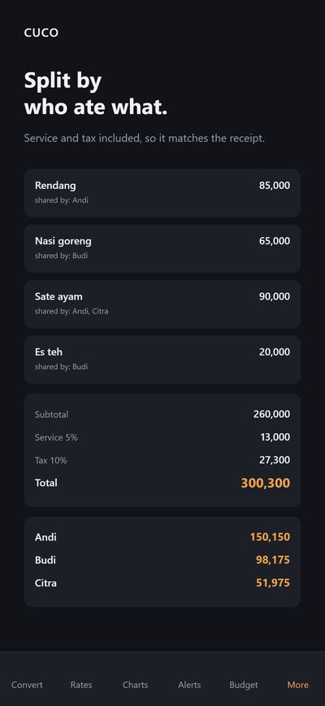
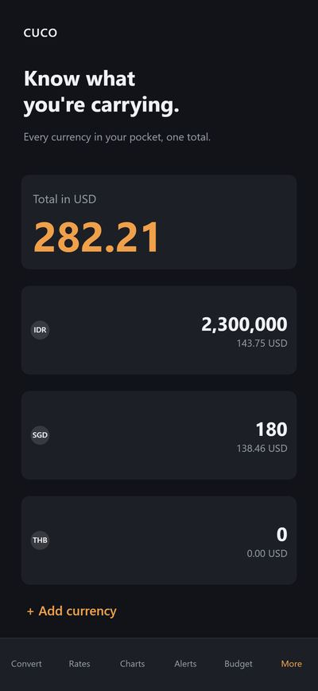
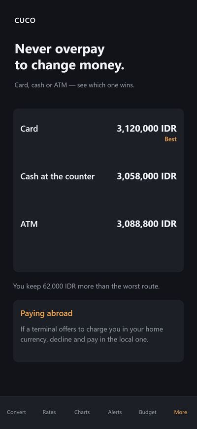

CUCO is a currency converter and travel money app: exchange rate charts, rate alerts, a trip budget and a bill splitter, with no account and no sign-up.
CUCO Currency Converter
Get it on Google PlayWhat it is for
Built for travel, converting USD to IDR without internet, and splitting bills with friends. It converts 166 currencies, Bitcoin, gold and silver, and keeps converting when the signal drops.
Features
- Currency converter with a big keypad, searchable list and one-tap swap
- Your own exchange rates list: type one amount and the whole list converts at once
- Exchange rate charts from 10 days to 2 years, with period high, low and percentage change
- Real rate after fees: enter a percentage and see what you actually receive
- Rate alerts: set a target above or below today's rate; CUCO checks while the app is open and notifies you when it is reached
- Travel budget and expense tracker with CSV export
- Bill splitter, even or itemized, with service charge, tax and tip
- Works offline using the last downloaded rates, plus a cash wallet and twelve themes
Screenshots





Frequently asked questions
Does CUCO work offline?
Yes. CUCO caches the last exchange rates it downloaded and keeps converting without a connection. Every screen shows the time its rates came from.
Do I need an account?
No. There is no account, no sign-up and no location permission. Your rates list, alerts, trips and expenses stay on your device.
Where do the rates come from, and how often do they update?
Fiat currency rates come from public data and update once a day. Bitcoin, gold and silver refresh roughly every sixty seconds while the app is open. The data sources are open.er-api.com, CoinGecko and Frankfurter.
Will the rates match what my bank or exchange counter offers?
Not exactly. Rates are for reference and will differ from what a bank, airport kiosk or exchange counter offers. The fee calculator shows what you would receive after a percentage fee.
Does the app contain ads?
Yes, the app contains ads.
How does the travel budget work?
Create a trip, set a budget and log each expense in the local currency. Every expense stores the exchange rate from the moment you recorded it, so totals do not change when rates move. You can export the trip to CSV.